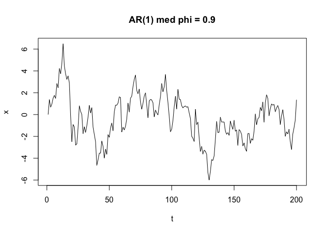

En personlig lærlingepakke for å utforske C++ og Rcpp. Inneholder implementasjoner av strengmanipulasjon og tidsserie-simulering, brukt til å sammenligne ulike C++-tilnærminger og forstå når C++ gir ytelsesfordeler over vanlig R.
Installasjon
# install.packages("pak")
pak::pak("pedersebastian/pedercplus")Funksjoner
to_lower — tre C++-varianter
Tre måter å konvertere en streng til små bokstaver på i C++:
library(pedercplus)
to_lower_v1("Hello World") # std::transform
#> [1] "hello world"
to_lower_v2("Hello World") # manuell loop med ASCII-aritmetikk
#> [1] "hello world"
to_lower_v3("Hello World") # range-based for-loop
#> [1] "hello world"
ar1_cpp — AR(1)-prosess
Simulerer en AR(1)-tidsserie. Fordi hvert steg avhenger av forrige kan ikke R vektorisere dette — C++ gir derfor en reel ytelsesfordel her.
set.seed(42)
x <- ar1_cpp(n = 200, phi = 0.9, sigma = 1)
plot(x, type = "l", main = "AR(1) med phi = 0.9", ylab = "x", xlab = "t")